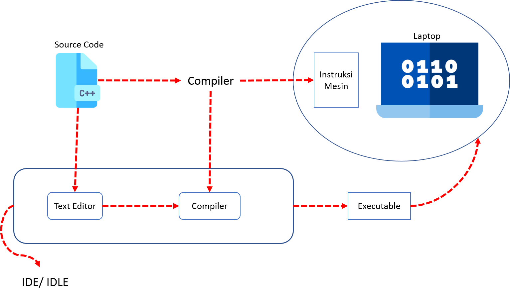

C++ merupakan ekstensi dari bahasa C yang dibuat oleh bjarne stroustrup, bjane stroustrup pada Bel labs pertama kali mengembangkan C++ pada awal 1980-an.Untuk mendukung fitur-fitur pada C++, dibangun efisiensi dan system support untuk pemrograman tingkat rendah.
Perbedaan mendasar antara bahasa C dengan bahasa C++ adalah dukungan pemrograman berorientasi objek.Bahasa C++ sudah ditambahkan konsep baru seperti class dengan sifat-sifatnya seperti inheritance dan overloading, selanjutnya kita akan membahas tentang bagaimana c++ bekerja
Bagaimana C++ bekerja, atau bagaimana cara kerja c++ ketika melakukan compiling?.Dalam melakukan compiling
Sebelum memulai memprogram C++ ada baiknya kita mengetahui dulu bagaimana cara kerja bahasa C++ dan apa saja yang kita butuhkan untuk memprogram C++, supaya nantinya tidak mengalami yang namanya pusing (seperti saya dulu). Biasanya Kebanyakan dari kita langsung download-download saja, trus belajar programnya trus ngak ngerti dan akhrinya frustasi, berikut gambar tentang proses compiling file C++

Dari gambar tersebut ada yang harus kita ketahui telebih dahulu bahwa, PC atau Laptop hanya mengerti satu bahasa dan bahasa itu adalah bahasa yang terdiri dari set instruksi yang berisikan satu dan nol (instruksi mesin), selain dari itu PC/ atau laptop tidak akan mengenalnya.
Source code C++, merupa bahasa pemrograman yang berisi sintak berbahasa inggris, yang tentunya tidak bisa langsung dibaca oleh PC/ Laptop, untuk itulah dibutuhkan yang namanya compiler.
Singkatnya Compiler adalah penterjemah dari Bahasa pemrograman yang ditulis oleh programmer ke bahasa mesin (intruksi mesin).
Compiler ini lah yang nantikanya akan meng-compile bahasa-bahasa C++ yang telah kita buat tersebut menjadi kebahasa mesin.
Untuk menulis sebuah program C++ dibutuhkan yang namanya text editor dan compiler. Hasil dari text editor itu nantinya akan di compile dengan compiler yang kemudian akan menghasilkan sebuah file executable.
Executable ini lah yang nantinya bisa dijalankan di PC/ Laptop. Tidak hanya untuk PC kita juga bisa membuatnya untuk perangkat Android, MAC, IOS dll.
Selanjutnya, kita akan membahas tentang apa itu variabel.
Semua program komputer yang sedang berjalan akan menyimpan data sementara di dalam RAM (Random Access Memori).
Data-data yang tersimpan di dalam RAM memiliki alamat yang direpresentasikan dalam bilangan heksa desmial.
Bagaiaman cara program menyimpan nilai ke RAM?
Jawabannya dengan menggunakan variabel.
Semakin banyak variabel yang kamu buat semakin besar pula memori yang akan digunakan di dalam RAM.
Jadi dapat kita simpulkan…
Variabel adalah sebuah nama lokasi penyimpanan di dalam memori.
Sementara tipe data adalah jenis data yang akan disimpan di dalam variabel, yang akan kita bahas di bagian selanjutnya.
Perhatikan beberapa script berikut:
string nama;
int umur;
char jenis_kelamin;
contoh program dengan menggunakan tipe data:
#include "iostream"
using namespace std;
int main(){
// deklarasi tipe data variabel
string nama;
int umur;
char jenis_kelamin;
// --- proses input ---
cout << "Siapakah namamu?" << endl;
cout << "jawab: ";
// menyimpan data ke variabel
getline(cin,nama);
cout << "Berapa umurmu?" << endl;
cout << "jawab: ";
// menyimpan data ke variabel
cin >> umur;
cout << "Jenis kelamin [L/P]: ";
// menyimpan data ke variabel
cin >> jenis_kelamin;
// --- proses output ---
cout << "Salam kenal, " << nama << " Sekarang engkau berusia ";
cout << umur << " dan kau berjenis kelamin "<< jenis_kelamin;
return 0;
}
penjelasan:
-tipe data string, adalah tipe data yang menampung karakter-karakter pada keyboard
-tipe data integer(int), adalah tipe data yang menampung angka dan bit bit biner, terdapat dua pilihan ketika menggunakan tipe data integer ini
yang pertama adalah int long, yang berarti bit yang bisa ditampung bisa lebih banyak daripada integer biasa, kedua adalah int short,
yang berarti bit yang ditampung akan lebih sedikit dari int biasanya.
ada juga unsigned, cara penulisannya unsigned int angka ini berarti kita tidak dapat menampung angka negatif di dalamnya, lalu signed,
cara penulisannya signed int angka ini berarti kita bisa menampung angka positif ataupun negatif, yang mana ini sudah secara default ketika kita membuat tipe data integer pada program kita.
-tipe data float, adalah tipe data berdesimal satu, hanya bisa menampung angka berdesimal satu, contoh 1.87, 1.8, 1.879
-tipe data double, adalah, tipe data berdesimal dua, hanya bisa menampung angka berdesimal dua saja, contoh 17.6, 17.998
-tipe data char, adalah tipe data yang hanya bisa menampung karakter bit satu, seperti huruf 'A', 'B', '+'
-tipe data boolean, adalah tipe data yang hanya mempunyai dua angka saja, yaitu 1 dan 0, yang berarti 1 itu benar atau true, dan 0 itu salah atau false.
Selanjutnya, kita akan membahas tentang konstanta.
Sekarang kita akan membahas tentang konstanta, tentang apa itu konstanta, dan bagaimana cara mengimplementasikannya.
Ok, sekarang apa itu konstanta?, konstanta adalah sebuah variabel yang tidak bisa diubah isinya, atau sudah paten, contohnya adalah phi pada lingkaran
phi pada lingkaran itu merupakan nilai yang sudah paten
cara mengimplementasikannya adalah dengan menambahkan kata kunci const diikuti dengan tipe datanya, contoh const float phi = 3.17;, selanjutnya kita akan membahas tentang operator
Dalam C++ operator dibagi menjadi 2, pertama adalah operator aritmatika, kedua adalah operator logika, ketiga adalah operator bitwise
Operator aritmatika adalah semua operasi yang menyangkut tentang matematika, ada kali, bagi, tambah, kurang, dan sisa bagi.Cara pengimplementasiannya sangat mudah, contoh:
#include "iostream.h"
std::int a = 12;
std::int b = 13;
int main() {
std::cout << a + b << std::endl;
std::cin.get();
return 0;
}
Selanjutnya adalah operasi logika, dalam operator ini, ada operasi AND, NOT, OR, contoh:
#include "iostream.h"
int a = 12;
int b = 13;
float hasil;
int main() {
//ini operasi AND
hasil = a && b;
//operasi NOT
hasil1 = a != b;
//operasi OR
hasil2 = a || b;
std::cout << hasil << std::endl;
std::cout << hasil1 << std::endl;
std::cout << hasil2 << std::endl;
std::cin.get();
return 0;
}
Selanjutnya adalah operasi bitwise, secara sederhana operasi bitwise adalah operasi yang digunakan untuk menghitung angka-angka biner, contoh:
#include "iostream.h"
int a = 10010;
int b = 1010001;
int hasil;
int main() {
//ini operasi XOR
hasil = a ^ b;
//operasi NOR
hasil1 = ~b;
std::cout << hasil << std::endl;
std::cout << hasil1 << std::endl;
std::cin.get();
return 0;
}
Selanjutnya, kita akan belajar tentang pengondisian pada c++.
Pada C++ pengondisian ada 2, yaitu if else dan switch, nah pada c++ if else digunakan pada pengondisian yang pasif, sementara switch digunakan untuk pengondisian yang dinamis, seperti mengondisikan input user ketika bermain game, maupun yang lain.
contoh:
#include "iostream.h"
int a = 10010;
int b = 1010001;
float hasil;
int main() {
//ini operasi AND
if (a && b) {
std::cout << hasil << std::endl;
}
std::cin.get();
return 0;
}
contoh switch:
#include "iostream.h"
int a = 10010;
int b = 1010001;
float hasil;
int main() {
switch(hasil){
case (a && b):
std::cout << hasil << std::endl;
break;
default:
std::cout << hasil << std::endl;
break;
}
std::cin.get();
return 0;
}
Selanjutnya, kita akan membahas tentang pengulangan di C++
Sekarang, kita akan membahas tentang pengulangan di C++.Ok, apa itu pengulangan?, pengulangan dalam C++ artinya
kita bisa mengulang output yang kita inginkan dalam beberapa kali, ini akan sangat berguna ketika,
kita membuat program yang berhubungan dengan logika, seperti tebak angka, dll.Dalam C++ ada 3 bentuk pengulangan, yang pertama:
1.for
2.while
3.do while
Ok, kita mulai dari 'for', for digunakan ketika kita ingin melakukan pengulangan yang pasif, ketika sebuah batas nilai sudah ditentukan, maka saat itu program berhenti
'while', while digunakan ketika kita ingin membuat pengulangan yang tetap, artinya jika suatu batas nilai tidak terpenuhi maka program tidak akan dijalankan
'do while', do while digunakan ketika kita ingin membuat pengulangan yang dinamis, artinya kita bisa membuat pengondisian juga di dalamnya, dan jika sebuah nilai tidak terpenuhi
maka program akan tetap dijalankan walaupun hanya sekali saja
contoh:
#include "iostream.h"
int a = 0;
int b = 0;
int main() {
//menggunakan for
for (int i = 0; i < 10; i++) {
std::cout << i << std::endl;
}
//menggunakan while
while (a != 0) {
std::cout << a << std::endl;
}
//menggunakan do while
do {
std::cout << b << std::endl;
}while(b < 9);
std::cin.get();
return 0;
}
Selanjutnya, kita akan membahas tentang array di C++.
Ok, kita akan membahas tentang array, jadi apa itu array?, array adalah sekumpulan data yang bisa secara urut maupun acak
Dalam array, terdapat dua tipe, pertama adalah array satu dimensi, dan array multidimensi, dalam strukturnya bisa digambarkan seperti ini
Dalam multimensi, berbeda lagi, seperti ini tabelnya
Jika, ingin 3 dimensi maka akan jadi seperti ini,
| 1 |
2 |
3 |
4 |
5 |
| 1 |
2 |
3 |
4 |
5 |
| 1 |
2 |
3 |
4 |
5 |
Begitu juga 4 dimensi dan seterusnya, untuk sintaksnya seperti ini.
#include "iostream.h"
int main() {
int angka[] = {1,2,3,4,5,6,7,8,9,11};
for(int i: angka) {
std::cout << i << std::endl;
}
int angkaMulti[][] = {{1,2,3,4,5}, {1,2,3,4,5}};
for(int j = 0; j < 5; j++) {
for (int y = 0; y < 5; y++) {
std::cout << angkaMulti[j][y] << '\n';
}
}
std::cin.get();
return 0;
}
Di bagian, 'int angka[]', secara opsional kita bisa mengisi batas angka pada 'angka[]'.Namun, jika isinya tidak bisa ditebak, kita bisa mengosonginya saja.
Baiklah, mungkin sekian untuk materi array, untuk lebih lanjut kalian bisa mencari di sumber lain, seperti w3school, javaTpoint, dll.Untuk materi selanjutnya, kita akan membahas
tentang function pada C++.
Ok, selamat datang lagi, kita sekarang ada pada materi function, langsung saja.Jadi, apa itu function?, dalam C++ function adalah suatu cara untuk membuat kode kita bisa digunakan kembali, walaupun tidak bisa secara keseluruhan.Penggunaan function ini,
sebenarnya sudah kita gunakan pada saat membuat variabel maupun pengulangan, nama fungsinya adalah 'int main() {}'.Yaps, jadi sebenarnya kita sudah berhasil membuat sebuah function, namun 'int main() {}',
adalah function yang memang harus ada dalam pembuatan program menggunakan c++, program sebesar apapun itu, pasti akan berakhir di 'int main(){}'.Jadi, kita akan langsung membuat saja sintaksnya.
#include "iostream.h"
int HelloMaulana() {
std::cout << "Hello maulana\n";
}
//fungsi/(function) utama
int main() {
//function buatan sendiri
HelloMaulana();
std::cin.get();
return 0;
}
Dalam C++ juga terdapat function yang sudah disediakan dari pembuatnya, seperti typedef(), size(), dll.Sekian, materi yang dapat saya tuliskan untuk kalian, semoga bermanfaat.
Sampai jumpa di materi berikutnya.